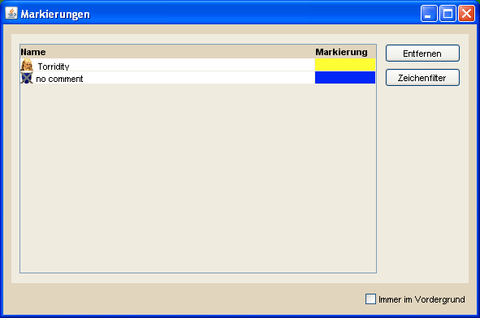

Markierungsübersicht |
|
|  | |
| Die Markierungsübersicht zeigt alle, für den aktuellen Server, gewählten Markierungen. Spieler- und Stammesmarkierungen sind mit entsprechenden Symbolen gekennzeichnet und die Markierungsfarbe kann direkt in der Tabelle über einen Klick auf die Farbe geändert werden. Außerdem bietet die Übersicht einen Zeichenfilter an. Ist diese Option aktiviert, werden auf der Hauptkarte sowie auf der Minimap nur die Dörfer gezeichnet, deren Besitzer oder deren Stamm markiert ist. Einen schnelle Zugriff auf diese Funktion erhält man über den Shortcut Alt + F. Existiert für einen Spieler sowohl eine Spieler- als auch eine Stammesmarkierung, so werden beide Markierungen angezeigt. Um diese deutlich zu sehen, wird die Verwendung der verschiedenen Zeichenebenen empfohlen! |